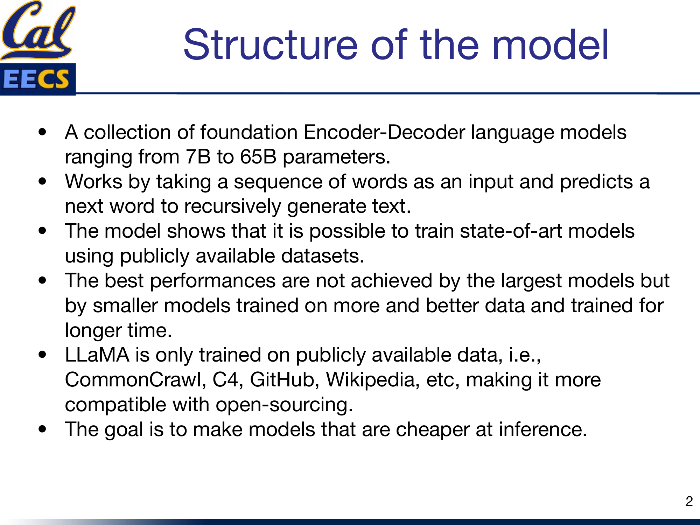
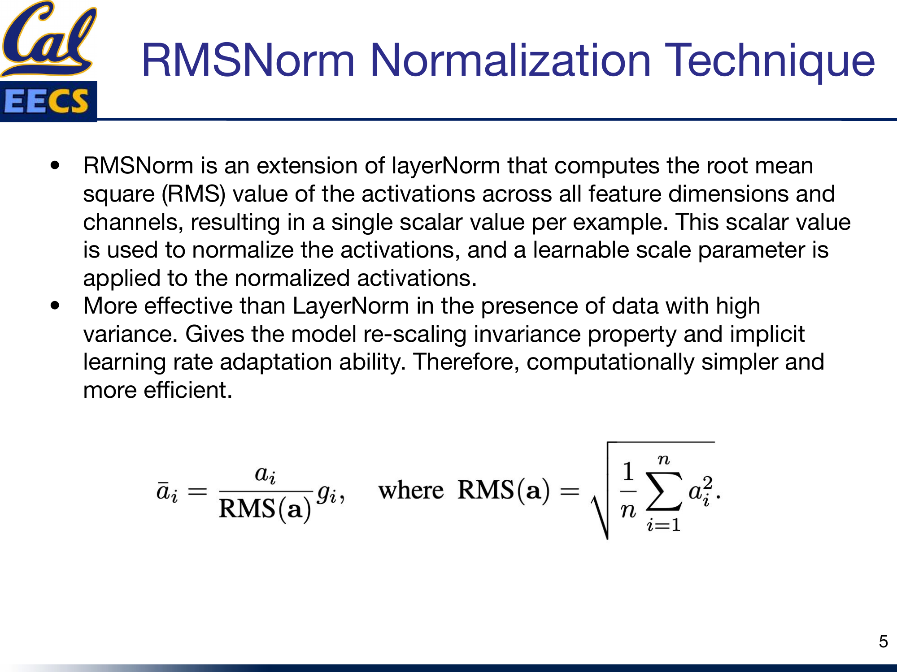
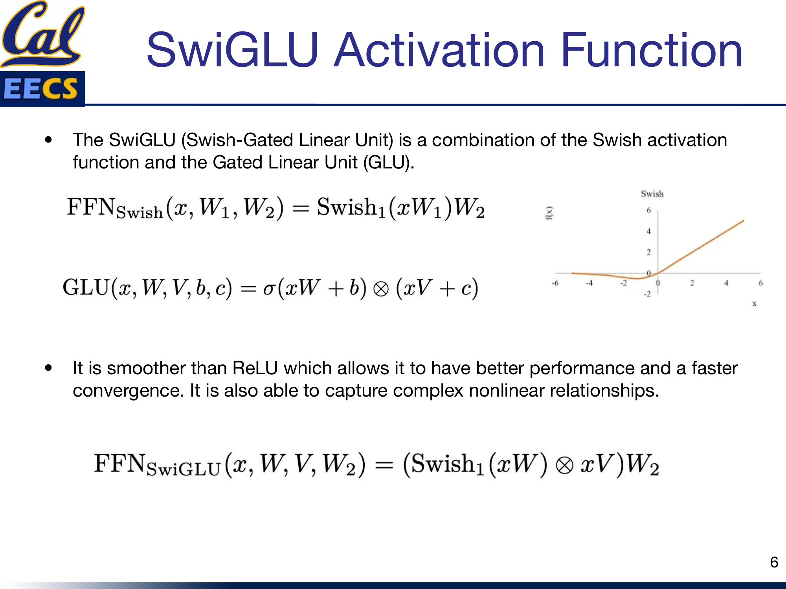
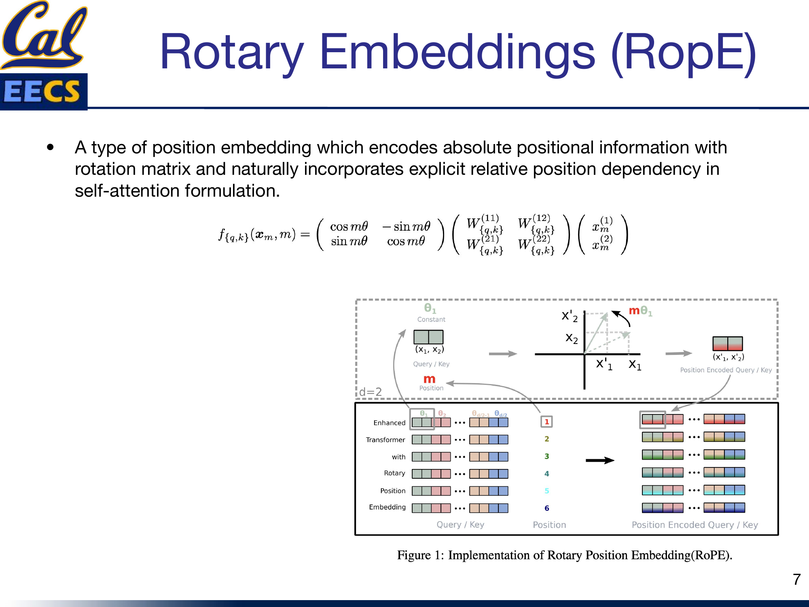
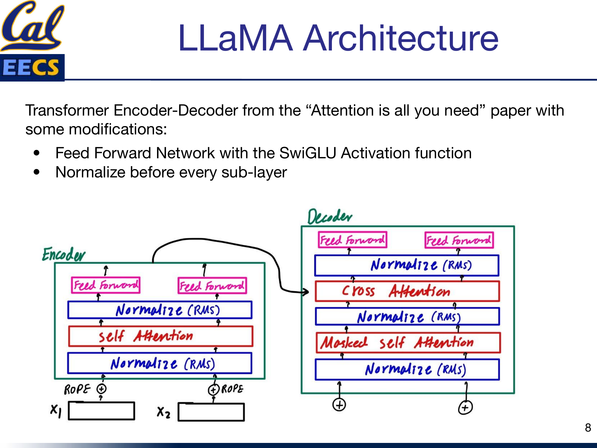
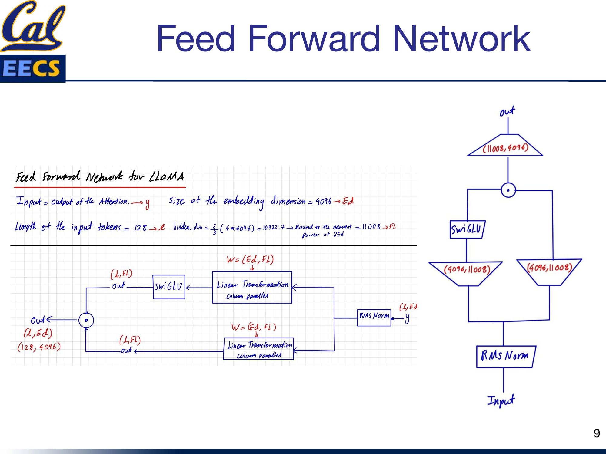
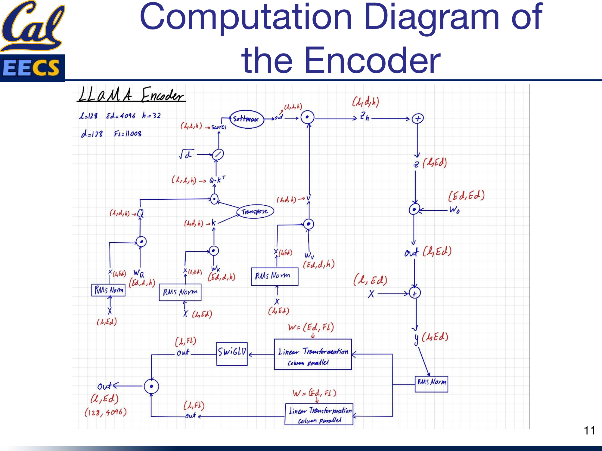
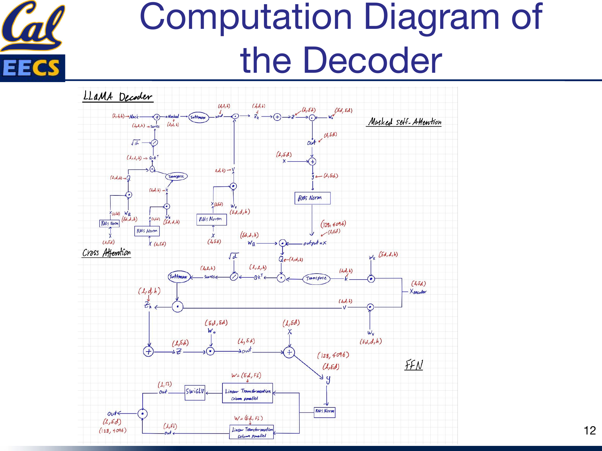

Details of the LLaMA Model (Large Language Model Meta AI)
By Hiva Mohammadzadeh | Stanford MSCS · UC Berkeley EECS
The LLaMA Philosophy: Open Data, Efficient Inference
The central insight behind LLaMA is counterintuitive: the best-performing language models are not the largest ones. They are smaller models trained on more data, better data, and for longer. This flips the scaling mindset that dominated the field for years. Instead of throwing more parameters at the problem, LLaMA asks: what if we throw more compute at training a reasonably sized model?
LLaMA is a collection of foundation language models ranging from 7B to 65B parameters. It works the way all autoregressive models work -- it takes a sequence of words as input and predicts the next word, recursively generating text one token at a time. What sets it apart is the training philosophy and the architectural refinements that make it efficient.
Two commitments define LLaMA. First, the model is trained exclusively on publicly available data: CommonCrawl, C4, GitHub, Wikipedia, and others. No proprietary datasets. This makes LLaMA fully compatible with open-sourcing, which is why it became the backbone of the open-source LLM ecosystem. Second, the goal is to make models that are cheaper at inference. A 13B model that matches GPT-3's performance at a fraction of the serving cost is more valuable in practice than a 175B model that requires a cluster to run.

LLaMA model family overview showing parameter counts and training data sources
Training: Pre-Training and Fine-Tuning
LLaMA's training follows the standard two-phase approach, but the details of the pre-training phase matter.
Pre-Training is unsupervised. The model is trained to predict the next token in a sequence given all past and present tokens. The training data spans the 20 languages with the most speakers, focusing on those using Latin and Cyrillic alphabets. The scale and diversity of the pre-training corpus is what allows smaller models to punch above their weight.
Fine-Tuning adapts the pre-trained model to specific downstream tasks by adding a task-specific output layer. The expensive pre-training happens once; fine-tuning is comparatively cheap and fast.
Key Innovations
LLaMA does not invent a new architecture from scratch. It takes the original transformer and makes surgical modifications that improve training stability, convergence speed, and computational efficiency. Three changes stand out.
LLaMA's three key changes: Pre-normalization with RMSNorm (faster than LayerNorm), SwiGLU activation with 3 weight matrices in the FFN, and RoPE applied at every layer instead of absolute embeddings at input only.
RMSNorm: Pre-Normalization for Stability
The original transformer applies Layer Normalization after each sub-layer (post-norm). LLaMA switches to pre-normalization: it normalizes the input of each sub-layer before the computation, not the output. And instead of standard Layer Norm, it uses RMSNorm.
RMSNorm is an extension of Layer Norm that drops the re-centering step entirely. Instead of computing both mean and variance, it only computes the root mean square of the activations across all feature dimensions, producing a single scalar value per example. That scalar normalizes the activations, and a learnable scale parameter is applied afterward:
RMS(a) = √( (1/n) ∑ ai2 )āi = (ai / RMS(a)) · gi
Why this matters in practice: RMSNorm is more effective than Layer Norm when your data has high variance, which is common in large-scale language modeling. It gives the model re-scaling invariance and implicit learning rate adaptation. And because it only needs one pass through the activations (no separate mean computation), it is computationally simpler and faster. At the scale LLaMA operates, that efficiency adds up.

RMSNorm normalization formula and computation flow
SwiGLU: A Better Activation Function
LLaMA replaces the standard ReLU (or GeLU) activation in the feed-forward network with SwiGLU -- a combination of the Swish activation function and the Gated Linear Unit (GLU).
The building blocks:
FFNSwish(x, W1, W2) = Swish1(xW1) W2GLU(x, W, V, b, c) = σ(xW + b) ⊗ (xV + c)FFNSwiGLU(x, W, V, W2) = (Swish1(xW) ⊗ xV) W2
SwiGLU is smoother than ReLU, which translates to better performance and faster convergence. The gating mechanism allows it to capture complex nonlinear relationships that a simple point-wise activation cannot. The practical consequence is that the feed-forward network now has three weight matrices instead of two -- more on this below, because it changes the dimension calculations significantly.

SwiGLU activation function formulation and comparison to ReLU
Rotary Positional Embeddings (RoPE)
LLaMA removes absolute positional embeddings entirely and replaces them with Rotary Positional Embeddings (RoPE) applied at every layer of the network.
RoPE encodes absolute positional information using a rotation matrix while naturally incorporating explicit relative position dependency in the self-attention formulation. The idea is elegant: instead of adding a position vector to the embeddings once at the input, you rotate the query and key vectors by an angle proportional to their position in the sequence:
fq,k(xm, m) = R(mθ) · W · xmwhere
R(mθ) is the 2D rotation matrix [cos mθ, -sin mθ; sin mθ, cos mθ]
The rotation means that the dot product between any two position-encoded vectors depends only on their relative distance, not their absolute positions. This gives the model a natural sense of distance between tokens without the rigid absolute position encodings that limit generalization to longer sequences.

RoPE rotation matrix applied to Query and Key vectors at position m with angle mθ
The Architecture: Modified Transformer
LLaMA builds on the encoder-decoder transformer from "Attention Is All You Need" with the three modifications above baked in. The optimizer is AdamW. Beyond the architectural changes, the authors also apply several efficiency techniques: optimized multi-head attention to reduce memory usage and runtime, checkpointing activations (saving activations during the forward pass so they do not need to be recomputed during the backward pass), and model and sequence parallelism to reduce memory consumption across devices.

LLaMA Encoder-Decoder architecture showing RMS Norm before Self-Attention, RMS Norm before Cross Attention, RMS Norm before Feed Forward, with RoPE embeddings at input
The pattern in each encoder or decoder block is: RMS Norm before every sub-layer (self-attention, cross-attention, feed-forward), with the SwiGLU activation inside the feed-forward network and RoPE applied to the attention queries and keys. Residual connections wrap each sub-layer as usual.
The SwiGLU Feed-Forward Network in Detail
Hidden dim = ⌈2/3 × 4 × 4096⌉256 = 11008. The gated path (W3) controls information flow through the Swish activation.
This is where things get interesting from an implementation perspective. The feed-forward network in LLaMA is not your standard two-matrix FFN. Because SwiGLU requires a gating path, there are three weight matrices instead of two.
Here are the dimensions for the base configuration (sequence length L = 128, embedding dimension Ed = 4096):
The hidden dimension calculation is a detail worth memorizing:
hidden_dim = 2/3 × (4 × 4096) = 10922.7→ Round to nearest multiple of 256 = 11008
That factor of 2/3 is there specifically because SwiGLU adds a third weight matrix. Standard transformers use a hidden dimension of 4d (where d is the model dimension). SwiGLU's gating mechanism adds roughly 50% more parameters in the FFN, so the hidden dimension is scaled down by 2/3 to keep the total parameter count comparable. The rounding to a multiple of 256 is a hardware optimization -- it aligns matrix dimensions for efficient GPU computation.
The feed-forward block works like this:
- The input y (shape L × Ed = 128 × 4096) goes through two parallel linear projections, both mapping from Ed to the hidden dimension Fl (4096 → 11008), using column parallelism.
- One path applies the SwiGLU activation. The other path passes through unchanged.
- The two paths are element-wise multiplied together -- this is the gating operation.
- The result passes through a final linear projection from Fl back to Ed (11008 → 4096), producing the output (128 × 4096).

Block diagram: Input → RMS Norm → two parallel Linear(4096, 11008) paths → SwiGLU on one path → element-wise multiply → Linear(11008, 4096) → output
Weight Matrix Dimensions
For the LLaMA-7B configuration with sequence length L = 128, embedding dimension Ed = 4096, 32 attention heads (h = 32), head dimension d = 128, and FFN hidden dimension Fl = 11008:
Input Embedding: - Shape: (batch_size, 128, 4096) - Per attention head: (batch_size, 128, 4096/32) = (batch_size, 128, 128, 32)
Self-Attention Weight Matrices (Wq, Wk, Wv, Wo): - All four: (batch_size, 4096, 4096)
Query, Key, Value Matrices: - Full: (batch_size, 128, 4096) - Per head: (batch_size, 128, 128, 32)
Feed-Forward Network (three weight matrices):
| Matrix | Shape | Parallelism |
|---|---|---|
| First dense (gate path) | (4096, 11008) | Column parallel |
| Third dense (input path) | (4096, 11008) | Column parallel |
| Second dense (output) | (11008, 4096) | Row parallel |
The fact that there are three weight matrices in the FFN instead of the standard two is the direct consequence of the SwiGLU gating mechanism. The first and third matrices create the two parallel paths; the second matrix projects back to the model dimension.
Full Computation Flow
Encoder
The encoder processes the full input sequence with the following flow (L = 128, Ed = 4096, h = 32, d = 128, Fl = 11008):
- Input X (L, Ed) passes through RMS Norm.
- Multi-head self-attention with RoPE on queries and keys. The attention is computed with optimized memory usage (column-parallel projections for Q, K, V).
- Residual connection adds the attention output back to the input.
- The result passes through another RMS Norm.
- The SwiGLU feed-forward network: two column-parallel linear projections (4096 → 11008), SwiGLU gating, then a row-parallel projection (11008 → 4096).
- Residual connection adds the FFN output back.

Computation diagram: Full LLaMA encoder flow from X(L,Ed) through RMS Norm, self-attention with RoPE, residual, RMS Norm, SwiGLU FFN with parallel linear paths, residual, to output
Decoder
The decoder adds masked self-attention and cross-attention, all with pre-normalization:
- Input passes through RMS Norm → Masked self-attention (causal mask prevents attending to future tokens) → residual connection.
- The result passes through RMS Norm → Cross-attention (queries come from the decoder output; keys and values come from the encoder hidden states) → residual connection.
- The result passes through RMS Norm → SwiGLU feed-forward network (same structure as the encoder FFN) → residual connection.

Computation diagram: Full LLaMA decoder flow with Masked Self-Attention, Cross Attention (Q from decoder, K/V from encoder), and SwiGLU FFN, all with RMS Norm pre-normalization
Key Takeaways
Here is what I take away from the LLaMA architecture as a practitioner:
- Data quality over model size. LLaMA demonstrated that state-of-the-art performance is achievable with publicly available data and smaller models. The 13B model competes with GPT-3 (175B) on most benchmarks. That is a 13x reduction in parameters.
- Pre-normalization with RMSNorm is now the standard for training stability in large language models. It is simpler, faster, and more robust than post-norm Layer Norm. If you are building any new transformer, use pre-norm RMSNorm.
- SwiGLU costs you a third weight matrix but buys you smoother gradients and better convergence. The 2/3 scaling of the hidden dimension (giving 11008 instead of 16384) keeps the parameter count in check while accommodating the gating mechanism.
- RoPE is a strict upgrade over absolute positional embeddings. It naturally captures relative position and generalizes better to sequence lengths not seen during training.
- Efficiency is a design priority, not an afterthought. Activation checkpointing, optimized attention, and model/sequence parallelism are baked into the architecture from the start. LLaMA is designed to be cheap to serve, not just cheap to train.
- Open data matters. By training exclusively on public datasets, LLaMA enabled the entire open-source LLM ecosystem that followed -- Alpaca, Vicuna, and hundreds of derivatives. The architectural choices are important, but the open-data commitment is what made LLaMA transformative.
This post is based on my presentation "Details of the LLaMA Model (Large Language Model Meta AI)" at Berkeley EECS. The original slides, including all architecture diagrams and computation flows, are available in Details_of_the_LLaMA_Model.pdf.